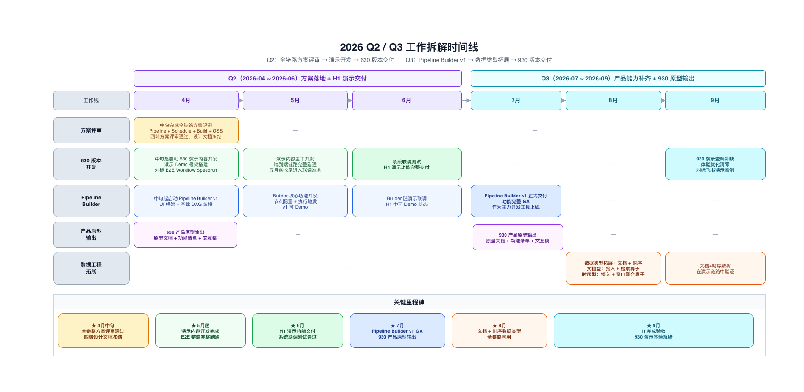

强项不是“功能多”，而是“平台闭环强”
从 transform / expression 算子目录、DSL、增量链路、流式处理，到血缘、Ontology、Writeback 和上层应用，Palantir 把开发、运行、治理、消费放在了一个平台模型里。
Management Summary
这轮调研表明，Palantir 真正领先的地方不只是 Spark 或 Flink，而是把 transform / expression 算子基线、执行层、治理层和应用层连接成同一套平台心智。
Three Judgements
首页不试图讲全技术细节，只聚焦三个管理问题：Palantir 到底强在哪、我们差距最集中在哪、建设上该优先投入什么。
从 transform / expression 算子目录、DSL、增量链路、流式处理，到血缘、Ontology、Writeback 和上层应用，Palantir 把开发、运行、治理、消费放在了一个平台模型里。
我们并不缺 Spark、Flink、调度器这类单体能力，但 transform / expression 能力基线、类型系统、版本化数据资产、统一血缘与业务语义层之间还没有自然衔接。
最值得优先建设的是数据集版本模型、算子注册中心、类型化 IR、增量链路和治理闭环；AIP、生态包装与高阶体验适合第二阶段跟进。
Capability Gaps
这张能力图不是为了罗列功能点，而是用四个维度说明“我们和 Palantir 的差距到底分布在哪”。
Palantir 用 Transform DSL、Pipeline Builder、89 条 transform 与 335 条 expression 能力基线统一开发心智；我们仍偏多工具拼接、少统一表达。
Palantir 把全量、增量、流式做成可选执行模式；我们具备引擎能力，但缺少围绕事务版本和链路路由的产品化封装。
Palantir 的壁垒在于 Dataset 版本、血缘、Ontology 与 Writeback 联动；这是从“数据平台”走向“业务平台”的关键差异。
测试、监控、安全、权限、Media Set、AIP 和平台内协作形成一体化体验；我们当前更多依赖组件能力，缺平台级整合。
Build Recommendation
最合理的路线不是一次性做成“Foundry 仿制品”，而是按平台成熟度分层推进。
优先统一 Dataset 版本模型、transform / expression 算子注册中心、类型化 IR、增量链路和基础血缘，让平台先拥有可复用的骨架。
围绕流批协同、算子执行适配器、Media Set 非结构化资产、测试监控和权限治理做成真正可用的生产能力，而不是停留在技术栈拼装。
在底座稳定后，再把 Ontology、Writeback、AIP 入口和平台级应用体验串起来，形成真正的业务语义平台。

Reading Paths
首页先回答“应该从哪里开始”，再把专题页收进清晰的下钻路径，避免所有页面在同一层级平铺。
Topic Directory
专题页按能力域归组。需要查具体机制时，从对应能力域进入，而不是在顶部导航里横向寻找。